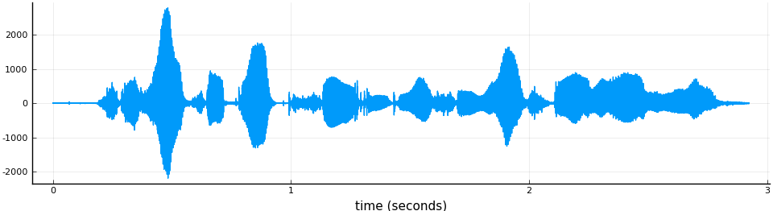

Features extraction
Loading an audio file
To extract any type of speech features you will need the audio signal stored in an Array and the sampling rate in Hertz. The SpeechFeatures package does not provide a way to load these two elements from audio files directly but there are several Julia packages to do this. In this tutorial, we will use WAV.jl. For the rest of the tutorial, we assumed that you have installed the WAV.jl package in your Julia distribution.
First of all, as an example, we download an audio file from the TIMIT corpus. In the Julia REPL prompt type:
julia> run(`wget https://catalog.ldc.upenn.edu/desc/addenda/LDC93S1.wav`)Now, we load the audio waveform:
julia> using WAV
julia> channels, srate = wavread("LDC93S1.wav", format = "double")Where channels is a NxC matrix where N is the length of the audio in samples and C is the number of channels. Since TIMIT is mono recorded it has only one channel. format = "double" indicates that the signals in channels will be encoded with double precision and each sample of the signal will be between 1.0 and -1.0.
The wavread function also accepts format = "native" which will return the data in the format it is stored in the WAV file. We discourage its use as extracting the features from integer or floating point encoded signal can lead to drastically different output.
We get the signal from the channels matrix:
julia> x = channels[:, 1]
julia> x *= typemax(Int16)The line x *= typemax(Int16) scales the signal to the same range as if it had been stored in 16 bits integer format. This is step is not necessary but it will allow us to have a setup very similar to HTK or Kaldi.
As a sanity check, we print the sampling rate and duration of the signal:
julia> println("sampling freq: $srate Hz\nduration: $(round(length(x) / srate, digits=2)) s")
sampling freq: 16000.0 Hz
duration: 2.92 sand we plot the waveform:
julia> using Plots
julia> pyplot()
julia> t = range(0, length(x) / srate, length=length(x))
julia> plot(t, x, size = (1000, 300), xlabel = "time (seconds)", legend = false)
Extracting the features
All the different types of features supported by this package follow the same extraction scheme.
- create a the feature extractor object with a specific configuration
- send the signal(s) to this extractor to get the features.
As an example, we will show how to extract the popular Mel Frequency Cepstral Coefficients (MFCC) features. First we create the extractor with the default configuration:
julia> mfcc = MFCC(srate = srate)If srate is not specified the extractor assumes a 16 kHz sampling rate.
Now, we extract and plot the features from our TIMIT sample:
julia> fea = x |> mfcc
julia> heatmap(range(0, length(x) / srate, length = size(fea, 2)),
1:size(fea, 1), fea, xlabel = "time (s)", c = :viridis)
Deltas and acceleration coefficients
Features The deltas and acceleration coefficients (i.e. "double deltas") are easily computed by chaining the features extraction with the deltas features extractor:
julia> Δ_ΔΔ = DeltaCoeffs(order = 2)
julia> fea = x |> mfcc |> Δ_ΔΔThe order parameter is the order of the deltas coefficients, i.e. order = 2 means that the first and second deltas (acceleration) coefficients will be computed.